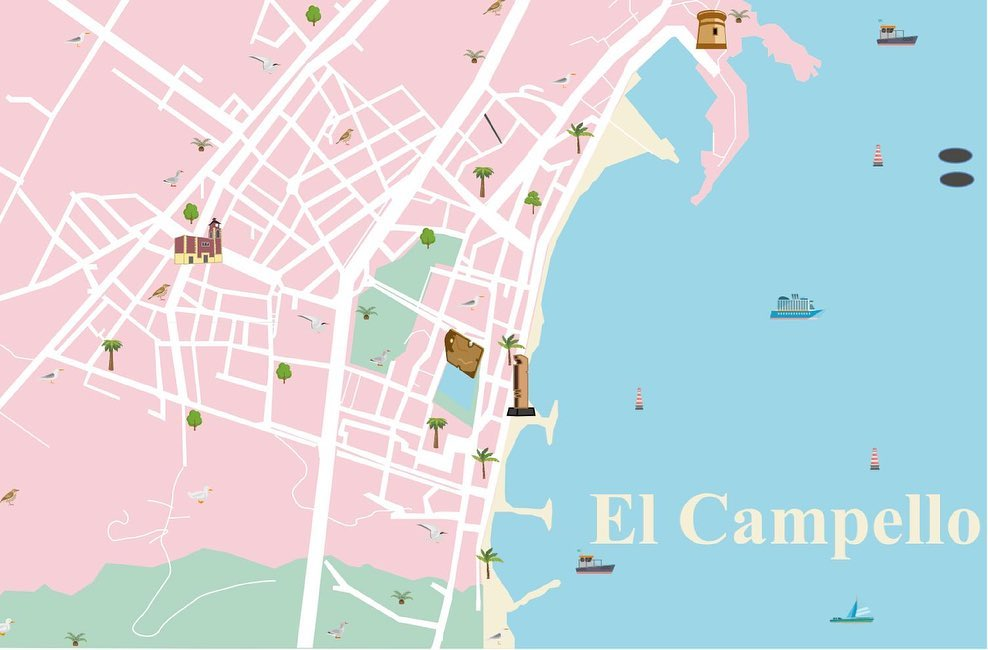
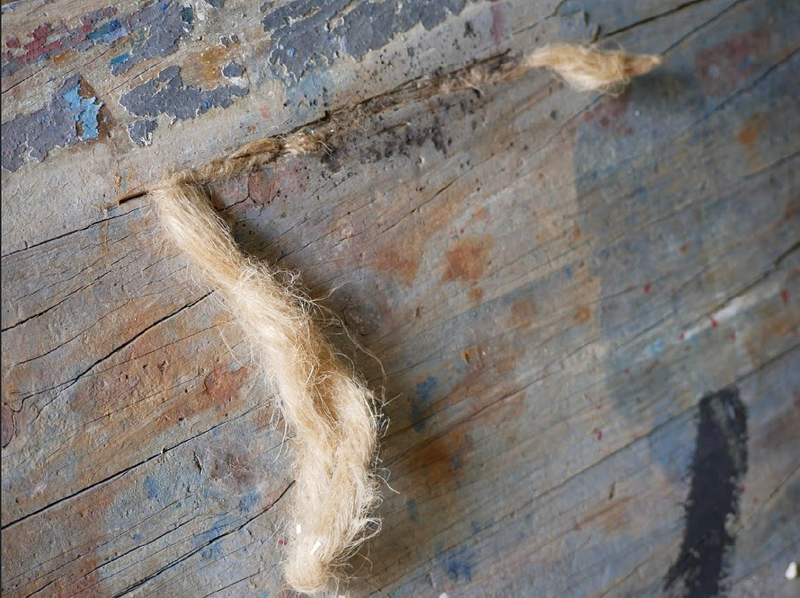
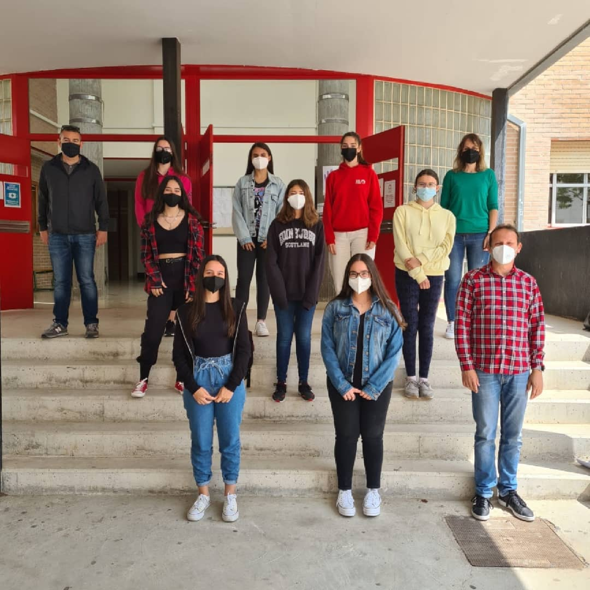
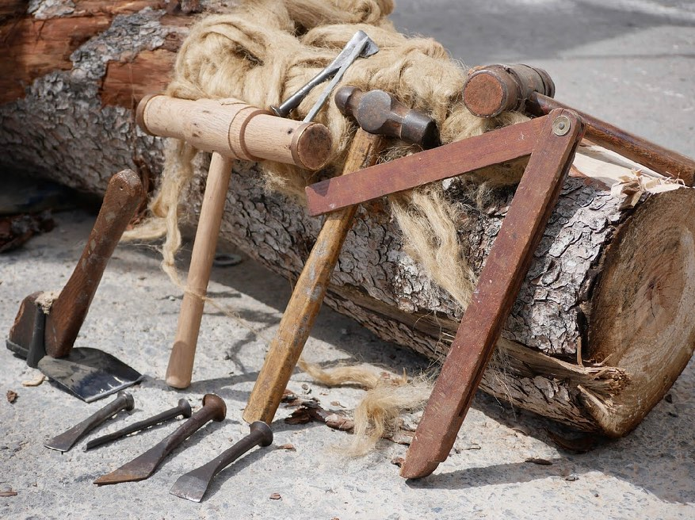
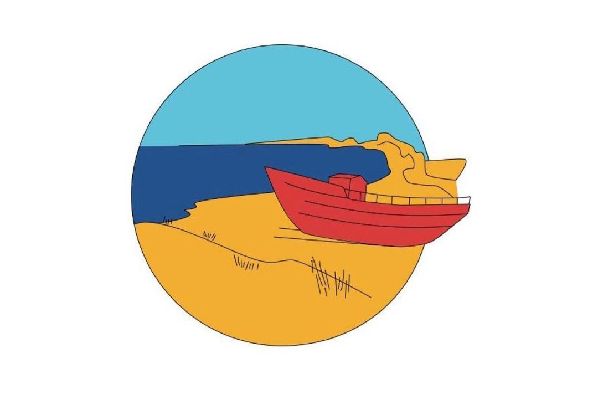
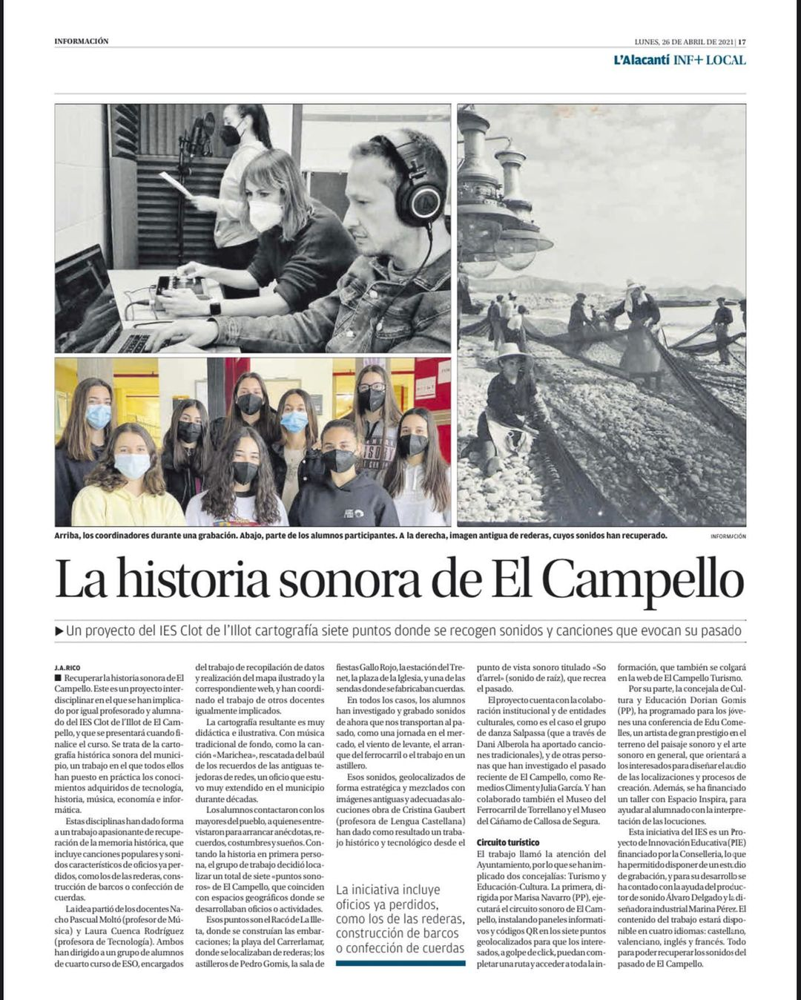

¿Què és So d'arrel?
Aquest projecte ha consistit en l'estudi del paisatge sonor del passat de l'el Campello. A partir de fonts iconogràfiques, entrevistes i material recollit de la bibliografia existent hem realitzat una recreació i geolocalització dels sons més representatius.
Amb l'objectiu de mostrar-los en una pàgina WEB.
Per a poder dur-ho a terme, l'alumnat ha realitzat diverses pràctiques d'enregistrament, edició i producció sonora, tant amb artistes d'un cert renom com amb els seus professors, que també els han guiat per a dissenyar tant els paisatges sonors com il·lustracions basades en fotografies antigues, icones dels hot espots, i un mapa il·lustrat en el qual s'organitza la cartografia sonora.
El repte més dur, i més pesat, ha sigut la creació, per part de l'alumnat, de la pròpia pàgina web en la qual es mostren els resultats obtinguts, utilitzant HTML, CSS i JavaScript. I al seu torn, optimitzant codi perquè aquests resultats es mostren correctament en centenars i milers de dispositius, a més de portar xicotets detalls que faciliten la navegació per la web, agraden a l'usuari i aporten valor a la pàgina web.
Aquesta web, va estar en desenvolupament per més d'1 any. Aquests llargs períodes es deuen al complet redissenye durant els últims mesos de desenvolupament. Tot això dut a terme a contrarellotge.



Amb l'objectiu de mostrar-los en una pàgina WEB.
Per a poder dur-ho a terme, l'alumnat ha realitzat diverses pràctiques d'enregistrament, edició i producció sonora, tant amb artistes d'un cert renom com amb els seus professors, que també els han guiat per a dissenyar tant els paisatges sonors com il·lustracions basades en fotografies antigues, icones dels hot espots, i un mapa il·lustrat en el qual s'organitza la cartografia sonora.
El repte més dur, i més pesat, ha sigut la creació, per part de l'alumnat, de la pròpia pàgina web en la qual es mostren els resultats obtinguts, utilitzant HTML, CSS i JavaScript. I al seu torn, optimitzant codi perquè aquests resultats es mostren correctament en centenars i milers de dispositius, a més de portar xicotets detalls que faciliten la navegació per la web, agraden a l'usuari i aporten valor a la pàgina web.
Aquesta web, va estar en desenvolupament per més d'1 any. Aquests llargs períodes es deuen al complet redissenye durant els últims mesos de desenvolupament. Tot això dut a terme a contrarellotge.
Després d'un taller de disseny corporatiu hem creat la marca “So d'arrel”, que dona nom a la pròpia pàgina web.
Dins del mateix projecte i gràcies a la col·laboració de les Regidories de Turisme, Educació i Cultura de l'Ajuntament del Campello, hem pogut dotar al poble amb 7 panells informatius que recullen part de la informació generada, i que mitjançant un codi QR et remet a la mateixa pàgina WEB amb la finalitat de completar la informació exposada en aquests.
Vist l'interés i la motivació observada en l'alumnat, el professorat participant en el projecte valorem de forma molt positiva les diferents metodologies emprades, tant d'aprenentatge cooperatiu, multidisciplinari i aprenentatge servei, ja que l'alumnat ha sigut capaç d'entendre el procés necessari per a portar a bon terme la realització d'una investigació a partir del mètode científic i sociològic, així com de conjuminar interessos i aptituds amb un objectiu comú.
Dins del mateix projecte i gràcies a la col·laboració de les Regidories de Turisme, Educació i Cultura de l'Ajuntament del Campello, hem pogut dotar al poble amb 7 panells informatius que recullen part de la informació generada, i que mitjançant un codi QR et remet a la mateixa pàgina WEB amb la finalitat de completar la informació exposada en aquests.



Vist l'interés i la motivació observada en l'alumnat, el professorat participant en el projecte valorem de forma molt positiva les diferents metodologies emprades, tant d'aprenentatge cooperatiu, multidisciplinari i aprenentatge servei, ja que l'alumnat ha sigut capaç d'entendre el procés necessari per a portar a bon terme la realització d'una investigació a partir del mètode científic i sociològic, així com de conjuminar interessos i aptituds amb un objectiu comú.
Política de cookies
Pel molt rar que semble, aquest lloc web no requereix l'ús de cookies per a fins publicitaris, mètrics, analítica ni per a qualsevol altre ús.
No gravem la interacció de l'usuari amb la web. No emmagatzemem la informació de GPS.
No gravem la interacció de l'usuari amb la web. No emmagatzemem la informació de GPS.
Agraïments
/logo barxell.jpg)
- Marina Llopis
- Remedios Climent
- Virginia Torrejón
- Julià Garcia
- Cristina Gaubert
- Lara Martín
- Charo Veiga
- María Sánchez
- Esther Mañez
- Sara Fita
- David Pérez
- Miguel Ángel Pérez
- Salvador López
- Maria Josep Pérez
- Daniela Alberola
- Álvaro Delgado
- Lola Sánchez
- Paco Varó
- Encarna Gomis
- Juan Santos
- Jose Daniel Hernández
- Guillem Torres
- Amparo Cerdá
- Antonia Marco
- Entrevistats: Àvia de Pepe Alberola
- Entrevistats: Àvia de Anna Crocella
- Entrevistats: Oncle de Anna Crocella
- Maria Ángeles Gomis
- Francisco Forner Varó (Últim calafat del Campello)
- Edu Comelles
- Pedro Gomis
- Lola Sánchez Sánchez
- Antonio González Salmerón
- Salvador Puig
- Web per obra i revisió de Iván Parkhomchyk
- Col·laboradors Web: Simón Hudec
- Col·laboradors Web: Teresa Lanuza
- Col·laboradors Web: Moisés Segura
- Il·lustracions digitals de les localitzacions: Daya Ortega
- Icones de localitzacions: Anna María Crocella
- Mapa il·lustrat: Virginia Torrejón
-
Aclaració:PI es refereix a l'assignatura optativa de Projecte Interdisciplizar vigent en 4t ESO
- Alumnes PI: Yaiza Ballester
- Alumnes PI: José Bernabeu
- Alumnes PI: Anna María Crocella
- Alumnes PI: Inés Cruz
- Alumnes PI: Enric Durá
- Alumnes PI: Daniel Ferrer
- Alumnes PI: Lola García
- Alumnes PI: Alejandra Garnés
- Alumnes PI: Ivana González
- Alumnes PI: Beatriz Molina
- Alumnes PI: Daniela Muñoz
- Alumnes PI: Alejandro Planelles
- Alumnes PI: Angy Ruzafa
- Alumnes PI: Irene Soler
- Alumnes PI: Marta Varó
- Laura Cuenca
- Ignacio Pascual
- Giner i Parodi: A la vora del mar
- Climent, R. (1995): El Campello , mi pueblo.